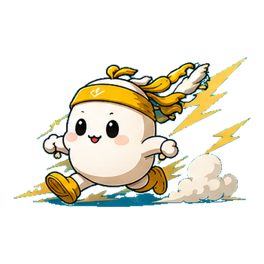
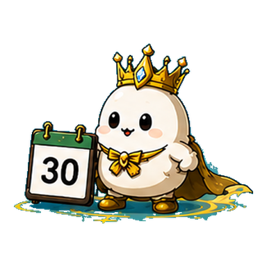

目標と時間をつなぐ行動記録アプリ
何時間働いたかではなく、何時間前に進んだか。
JIROKUは、1時間ごとに「何をしたか」を記録し、
3か月後の目標と今日の行動をつなげて振り返るアプリです。
毎晩、AIコーチが記録をもとにフィードバック。
予定を立てて終わるのではなく、実際の行動から明日を改善します。
よく続けられた1日。
架電を午前に寄せた日は、アポ率が上がっています。
午前10時までは、
架電だけに使う。
午後の会議で、目標直結の時間が1.5時間減りました。
レポートを見る›72 / 100
※ 画面はイメージです。数値はサンプルです。
朝から仕事をした。Todoもいくつも終わらせた。会議にも出た。メールも返した。気づけば、もう夜。
でも「今日は何に時間を使った？」と聞かれると、意外と思い出せない。
さらに「3か月後の目標のために何時間使った？」となると、もっと分からない。
足りないのは、
根性ではなく「続く仕組み」。
続けられないのは、やる気が足りないからではありません。 振り返り続けられる仕組みが、まだ手元にないだけです。JIROKUはそこを設計しています。
JIROKUでは、1日を1時間ごとの24枠で見ます。記録するのは、何をしたか／自己評価／時間の種類／メモの4つだけ。 基本の入力は、短時間で終えられるよう設計されています。
チェックを付けるだけのアプリではありません。「何をしたか」「どう感じたか」を自分の言葉で残すこと。 その言葉が、あとでAIが読み取る材料になります。
※ 画面はイメージです。
そう思った人ほど、先に知ってほしい機能があります。
スマホのキーボードのマイクを押して、思い出すままに話すだけ。 1時間ごとに、その都度入力する必要はありません。 寝る前に1日分をまとめて話しても、AIが時間帯ごとの記録に分けて整えます。
そのとき何を感じたか、思いついたことも、そのまま話して大丈夫です。 言葉を整える必要はありません。整えるのはJIROKUの仕事です。
話すだけ・書くだけでOK。
1日分をまとめて話しても大丈夫です。
※ 画面はイメージです。
同じ内容が続いた時間帯を、一括で入力できます。

集中時間が終わったら、そのまま記録に変わります。
Googleカレンダーの予定を、記録の候補として取り込みます。
全部を毎日きっちり埋める必要はありません。埋まらなかった時間帯があること自体も、あとで読み返すと意味を持ちます。
JIROKUでは、記録した時間を6つに分けて見ます。同じ8時間でも、中身はまったく違います。
回復も人間関係も、削るべき無駄な時間ではありません。JIROKUは24時間すべてを生産活動に変えるアプリではなく、 自分が大切にしているものへ、ちゃんと時間を配るための道具です。
3か月目標 → 2週間目標 → 今週の目標 → 今日のタスク。JIROKUはこれを一本につなぎます。 それぞれに進捗があり、実績が積み上がっていきます。
毎日の記録から「この時間は、どの目標のためだったのか」が見えるようになります。
目標は、
立てるだけでは変わらない。
今日の行動までつながって、初めて前に進む。
※ 画面はイメージです。
毎晩22時、その日の記録をもとにAIレポートが生成されます。届くのは、 今日の点数／良かった点／改善できる点／明日のアクション1つ／成長のトレンド。
点数は5項目・合計100点で、記録の内容からアプリ側が計算しています。 AIがその場の判断で点を付けているわけではありません。AIは、算出された結果と記録の中身を読んでフィードバックします。
架電を午前に寄せた日は、アポ率が上がっています。その形を今日も守れました。
改善できる点午後に会議が入り、目標直結の時間が1.5時間減りました。
※ 画面・コメントはイメージです。
JIROKUのAIには、直近の記録・目標・過去のレポート・月次サマリー・カレンダー予定・ コーチとの面談記録・初回アンケートといった、あなた固有の文脈が渡されます。 だから、毎回同じ一般論を返すだけにはなりません。
続けるほど、
返ってくる言葉が自分に近づく。
夜のレポートだけではありません。1日の流れに合わせて、必要なときに必要なことだけを届けます。
AIからの声のかけ方は、自分で選べます。
JIROKUには、XP・レベル・階級・連続記録日数・隠しジロー・図鑑・攻略本・みんなの頑張り・ランキングといった、 続けるためのちいさな仕掛けがあります。
主役ではありません。データを扱うだけになりがちな毎日を、少しだけ楽しくするための補助機能です。
コーチジロー「まずは今日の1時間から。
君ならできる、一緒にいこう！」
※ 画面はイメージです。
記録の中身に条件が結びついていて、満たすと向こうから会いに来ます。探しに行くものではありません。

JIROKUは、アプリを渡して終わりにはしません。3つの層で、続けることを支えます。
毎日の記録と振り返り。朝から夜まで、いつでも横にいます。声のかけ方は自分で選べます。
コミュニティと「みんなの頑張り」。同じ日に記録した人が見えるので、一人でやっている感じがしません。
定期的な面談で伴走。目標を立て直すときなど、判断が要る場面は人が一緒に考えます。
今日は仕事を頑張った。
なんとなく忙しかった。
気づけば一日が終わった。
1日が、具体的な行動として残る。そして夜、AIがその記録をまとめて一緒に振り返る。
※ 画面はイメージです。
溜まった記録は、読み返すためだけのものではありません。JIROKUでは、蓄積された自分の記録に対して質問できます。 記録が、答えてくれる資産に変わっていきます。
「先月と今月で何が変わった？」「集中できた日に共通することは？」—— 人の記憶ではなく、実際に残した記録から答えが返ってきます。
直近30日で最も多いのは日常業務（38時間）。ただし目標に直結した時間は、先月より4.5時間増えています。
※ 画面・回答はイメージです。
記録が増えるほど、自分についての解像度が上がっていきます。
あなたの「取扱説明書」が、
少しずつ完成する。
時間だけではなく、目標・行動・継続・振り返り・改善まで自分で回していく。 それがJIROKUの考える「自己経営」です。
成果力・時間配分力・実行力・継続力・立て直し力。
自分の成長を、ひとつの点数ではなく複数の角度から見ていきます。
JIROKUはまだ始まったばかりのサービスです。だからこそ、数字はそのままお見せします。
2026年8月10日時点の実数です。 利用者を増やす前に、続く形になっているかを確かめている段階です。
アプリだけで使うか、専属のコーチと一緒に使うか。
どちらもJIROKUの機能に制限はありません。
下の全機能を、期間中はそのまま使えます。
アプリの全機能に加えて、専属のコーチが定期的に伴走します。 面談の記録はAIにも渡るので、日々のフィードバックもその文脈で返ってきます。
進め方や回数は人によって変わります。どちらが合うかも含めて、無料セッションでご相談ください。
JIROKUでは、はじめに約30分の無料オンラインセッションを行っています。
そこで一緒に整理するのは、次の3つです。
その場で契約する必要はありません。
時間を、経営する。
毎日は、24時間しかない。だからこそ、何に時間を使うかで、未来は少しずつ変わっていく。
記録して、振り返って、また明日を変える。